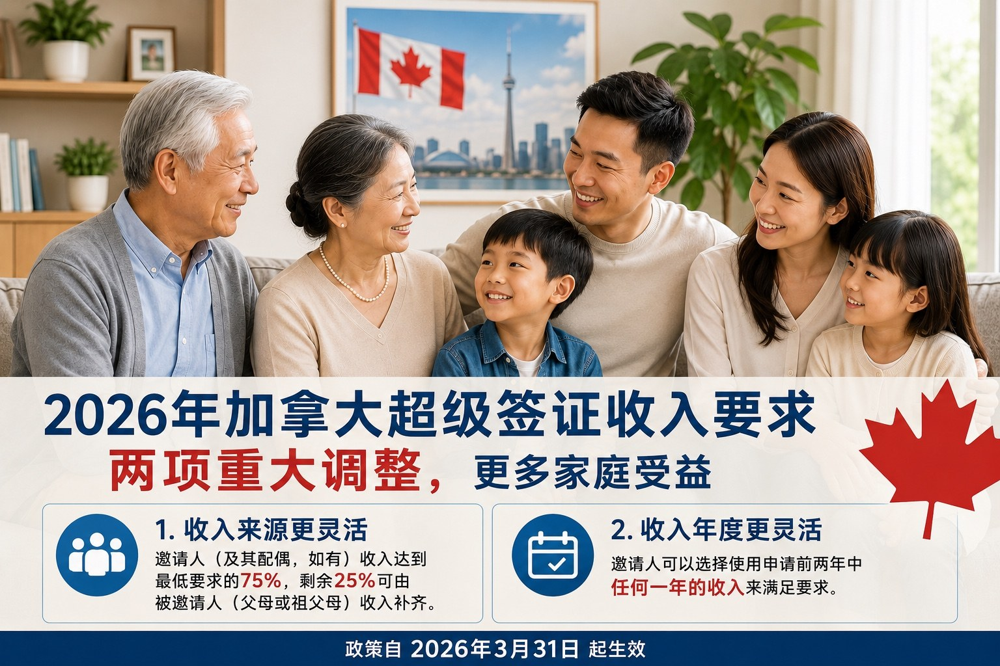

收入不够也可能有机会？2026年加拿大超级签证收入要求有重大调整
加拿大移民部（IRCC）近期对父母及祖父母超级签证（Parent and Grandparent Super Visa）的收入要求计算方式作出调整。自 2026年3月31日 起，IRCC 将采用新的收入评估方式，以判断加拿大境内的子女或孙子女是否具备足够经济能力支持父母或祖父母在加拿大长期探亲居住。
这项调整对于一些收入不稳定、最近一年收入有所下降，或者希望用申请人（被邀请人）收入补充家庭支持能力的家庭来说，是一个值得关注的重要变化。
一、超级签证是什么？
超级签证是为加拿大公民、永久居民的父母及祖父母设立的一类长期访问签证。与普通访问签证相比，超级签证允许父母或祖父母每次入境后在加拿大停留更长时间。
目前，符合条件的超级签证申请人通常可以每次在加拿大停留最长 5 年，并且在加拿大境内还可以申请延长停留时间。
对于很多暂时无法通过父母团聚移民（PGP）担保父母获得永久居民身份的家庭来说，超级签证是一个非常重要的替代选择。
二、这次调整的核心变化是什么？
在超级签证申请中，加拿大境内的子女或孙子女必须作为邀请人，向 IRCC 证明自己有足够收入支持父母或祖父母在加拿大期间的生活。
根据 IRCC 修改后的规定，邀请人可以通过以下两种方式之一证明其满足最低收入要求：
方式一：邀请人可以证明其在申请提交前两个税务年度中的任意一年，收入达到或超过 IRCC 规定的最低收入标准。
方式二：如果邀请人最近一个税务年度的收入达到最低收入要求的 75%，则可以结合超级签证申请人本人及其配偶的收入，共同补足剩余部分，以满足收入要求。
这意味着，IRCC 不再只机械地看加拿大子女或孙子女单方面是否达到收入门槛，而是允许在一定条件下考虑申请人（被邀请人）家庭自身的经济能力。
三、这是否等于取消了收入要求？
不是。
这次调整并不是取消超级签证的收入要求。加拿大境内的邀请人仍然必须满足 IRCC 规定的最低收入要求，或者至少达到其中 75%，再由申请人及其配偶的收入补足差额。
换句话说，IRCC 只是让收入证明方式变得更灵活，而不是放松到完全不看经济能力。
申请人仍然需要证明：
- 符合邀请人资格；
- 达到或基本达到最低收入要求；
- 申请人（被邀请人）有足够经济能力支持在加拿大期间的生活；
- 申请人（被邀请人）仍然是真实临时访客，会在授权停留期结束时离开加拿大；
- 申请人符合体检、保险和其他临时居民要求。
四、家庭人数如何计算？
超级签证的最低收入要求取决于家庭人数。IRCC 要求在计算家庭成员人数时，不只是计算加拿大境内的邀请人，还需要包括：
- 邀请人的配偶和未成年子女；
- 本次被邀请的父母或祖父母；
- 邀请人仍在担保责任期内的其他被担保人。
例如，如果加拿大境内的子女邀请父母两人申请超级签证，而该子女本人已婚并有两个未成年子女，那么家庭人数通常会计算为：邀请人本人 + 配偶 + 两个孩子 + 两位父母 = 6 人。
家庭人数越多，对应的最低收入要求也越高。
五、目前超级签证最低收入标准是多少？
根据 IRCC 页面，目前超级签证的最低收入标准已更新至 2025 年 7 月 29 日。例如：
2 人家庭：$38,002
3 人家庭：$46,720
4 人家庭：$56,724
5 人家庭：$64,336
6 人家庭：$72,560
7 人家庭：$80,784
超过 7 人的家庭，每增加一人，需额外增加 $8,224。
需要注意的是，收入标准可能会随年份调整。因此，在准备申请前，应以 IRCC 官网最新公布的金额为准。
六、这项变化对哪些家庭最有帮助？
这项政策调整对以下家庭可能特别有利：
- 邀请人前一年收入略低于最低收入要求，但已达到 75% 以上；
- 申请人（被邀请人）有稳定退休金、投资收入、租金收入或其他可证明收入；
- 邀请人过去两年中有一年收入达标，但另一年收入较低；
- 家庭希望在父母团聚移民名额有限的情况下，先通过超级签证实现长期探亲陪伴。
对于这些家庭来说，新政策提供了更大的解释空间，也让申请材料的组织方式变得更加重要。
七、超级签证与父母团聚移民的收入要求不同
很多申请人容易把超级签证和父母团聚移民混在一起。
超级签证是临时居民申请，本质上仍然是访问签证。它允许父母或祖父母较长时间留在加拿大，但不会直接取得永久居民身份。
父母团聚移民则是永久居民申请，需要加拿大境内担保人收到邀请后递交担保申请，并且通常需要满足申请前 3 个税务年度的收入要求。对于 2025 年父母团聚移民，IRCC 公布的收入表仍然明显高于超级签证收入表，反映出两类申请的法律性质和经济责任并不相同。
因此，本次超级签证收入计算方式调整，并不代表父母团聚移民的收入要求也同步改变。
结语
自 2026 年 3 月 31 日起，IRCC 对父母及祖父母超级签证收入要求的计算方式作出调整，允许邀请人在符合条件的情况下，结合申请人（被邀请人）的收入来满足最低收入要求。
这项变化对许多希望与父母、祖父母在加拿大长期团聚的家庭来说，是一个积极信号。但申请人仍需要注意，超级签证并不是永久居民申请，IRCC 仍会审查申请人是否是真实临时访客，以及是否具备充分的经济和居住安排。
Income Not Quite Enough? Canada’s 2026 Super Visa Income Requirement Has Changed Significantly
Immigration, Refugees and Citizenship Canada (IRCC) has recently changed the way income is assessed for the Parent and Grandparent Super Visa. Starting March 31, 2026, IRCC will use a new income assessment method to determine whether a child or grandchild in Canada has sufficient financial ability to support their parent or grandparent during an extended visit to Canada.
This change is important for families where the Canadian host’s income is unstable, where the most recent year’s income has decreased, or where the applicant’s own income may help supplement the family’s financial support.
1. What Is a Super Visa?
The Super Visa is a long-term visitor visa for parents and grandparents of Canadian citizens and permanent residents. Compared with a regular visitor visa, a Super Visa allows parents or grandparents to stay in Canada for a longer period after each entry.
Currently, eligible Super Visa holders may usually stay in Canada for up to 5 years at a time, and they may also apply to extend their stay from inside Canada.
For many families who are not currently able to sponsor their parents for permanent residence through the Parent and Grandparent Program (PGP), the Super Visa is an important alternative option.
2. What Are the Key Changes?
In a Super Visa application, the child or grandchild in Canada must act as the host and show IRCC that they have enough income to support their parent or grandparent during their stay in Canada.
Under IRCC’s updated rules, the host may prove that they meet the minimum income requirement in one of the following two ways:
Option 1: The host may show that their income met or exceeded IRCC’s minimum income requirement in either one of the two tax years before the application is submitted.
Option 2: If the host’s income in the most recent tax year reached at least 75% of the minimum income requirement, the income of the Super Visa applicant and the applicant’s spouse may be included to make up the remaining amount.
This means IRCC will no longer only look mechanically at whether the Canadian child or grandchild alone meets the full income threshold. In certain circumstances, IRCC may also consider the financial ability of the applicant’s own household.
3. Does This Mean the Income Requirement Has Been Removed?
No. This change does not cancel the Super Visa income requirement. The host in Canada must still meet IRCC’s minimum income requirement, or at least meet 75% of it, with the remaining amount made up by the applicant’s and the applicant’s spouse’s income.
In other words, IRCC has made the way to prove income more flexible, but financial ability remains an important requirement.
Applicants still need to show that:
- The person in Canada qualifies as a host;
- The host meets, or substantially meets, the minimum income requirement;
- The applicant has sufficient financial ability to support their stay in Canada;
- The applicant is a genuine temporary visitor and will leave Canada at the end of their authorized stay;
- The applicant meets medical examination, insurance and other temporary resident requirements.
4. How Is Family Size Calculated?
The minimum income requirement for a Super Visa depends on family size. When calculating family size, IRCC does not only count the host in Canada. The calculation may also include the host’s spouse and minor children, the parent or grandparent being invited, and other sponsored persons for whom the host is still financially responsible.
For example, if a child in Canada invites both parents to apply for Super Visas, and the child is married with two minor children, the family size would usually be calculated as: host + spouse + two children + two parents = 6 people.
The larger the family size, the higher the required minimum income.
5. What Is the Current Minimum Income Requirement for a Super Visa?
According to IRCC’s website, the current Super Visa minimum income table was updated on July 29, 2025. For example:
2-person family: $38,002
3-person family: $46,720
4-person family: $56,724
5-person family: $64,336
6-person family: $72,560
7-person family: $80,784
For families with more than 7 people, add $8,224 for each additional person.
Please note that the income amounts may change from year to year. Before preparing an application, applicants should always check the latest income table on the IRCC website.
6. Which Families May Benefit Most from This Change?
This policy change may be especially helpful for families where the host’s income in the previous year was slightly below the minimum requirement but reached at least 75%, where the applicant has stable pension income, investment income, rental income or other verifiable income, or where the host met the income requirement in one of the two previous tax years but had lower income in the other year.
It may also help families who cannot currently proceed with PGP sponsorship due to limited spots and wish to use a Super Visa for long-term family visits first.
7. The Super Visa Income Requirement Is Different from the Parent and Grandparent Sponsorship Requirement
Many applicants confuse the Super Visa with parent and grandparent sponsorship.
A Super Visa is a temporary resident application. It is still a visitor visa. It allows parents or grandparents to stay in Canada for an extended period, but it does not grant permanent resident status.
Parent and Grandparent sponsorship, on the other hand, is a permanent residence application. The sponsor in Canada must first receive an invitation to apply and usually needs to meet the income requirement for the three tax years before the application.
Therefore, this change to the Super Visa income calculation does not mean that the income requirement for Parent and Grandparent sponsorship has also changed.
Conclusion
Starting March 31, 2026, IRCC has changed the way income is calculated for Parent and Grandparent Super Visa applications. Under the new rules, where the conditions are met, the host may use the applicant’s income to help meet the minimum income requirement.
This is a positive development for many families who hope to reunite with their parents or grandparents in Canada for longer visits. However, applicants should remember that a Super Visa is not a permanent residence application. IRCC will still assess whether the applicant is a genuine temporary visitor and whether there are sufficient financial and living arrangements for the stay in Canada.